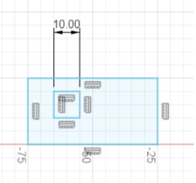
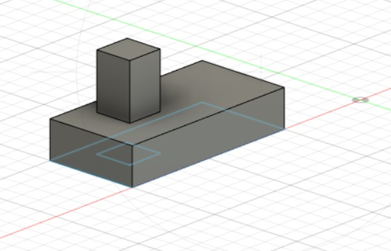
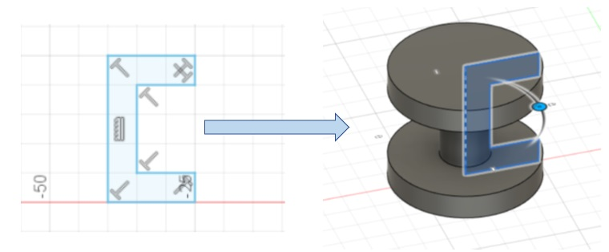

Computer Aided Design (CAD) is the use of computer softwares and applications to create, modify and optimize designs. There is a variety of 3D and 2D designing software available for use. For example, Fusion360 is widely used to create 3D models. Here are some of the software’s functions.
Sketching allows for drawings to be made with precise measurements and contraints to aid in product design. Here is an example of what a sketch looks like. 
From the sketch, you can use the extrusion fucntion to elongate parts of your product to the desired height.This is how the previous sketch looks like after it had been extruded. 
The revolution fucntion allows you to revolve a sketch to make achieve a curved or fully rounded shape. Here is an example of what the revolve fucntion can do.
Some other designing software used in this module would include Inkscape, which is used to design and edit 2D vectors, and tinkercad which is used to create and play around with circuit design.
Check out my final project or my other projects, to see how some of these softwares were used to design products.